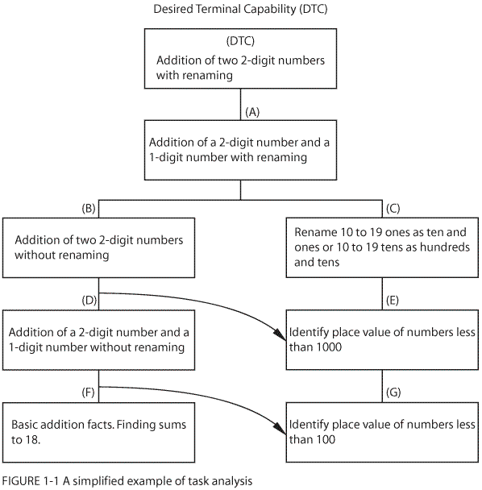
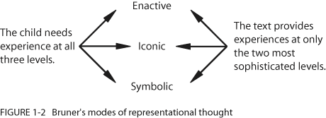
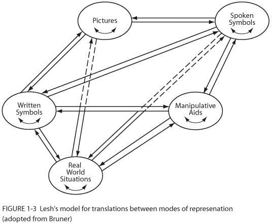
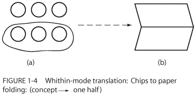
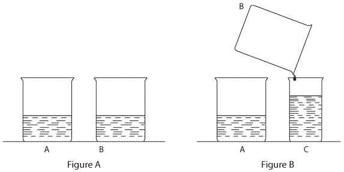

|
|||||
| 1 | |||||
|
Some
Notes on the
Nature of Mathematics Learning |
|||||
|
Thomas
Post |
|||||
|
|
|||||
|
Introduction The process of learning has been a source of amazement, fascination, and study for centuries. Investigators have continually attempted to describe both animal and human learning in a wide variety of interactions and contexts. More recently, large numbers of actual experiments have been conducted. It is perhaps ironic, given the sheer magnitude of the learning research that has been undertaken, that we still do not know precisely how human beings learn. Numerous theories have emerged, many describing in minute detail both the learner and the manner in which learning can be enhanced. Others have chosen to adopt a comparatively broad interpretation of the learner and have satisfied themselves with a rather general description of the kinds of activities that will most effectively promote learning. Some theories have portrayed the learner as a passive recipient in the learning process, almost as if her or his mind were a blank slate that could be written on at will by some outside source. Others have contended that children must be actively involved, both mentally and physically, if they are to truly benefit from a given experience. Some theorists have depicted the role of the teacher as the prime expositor of knowledge, as the person primarily responsible for children's learning, almost as if the children were not intimately involved! Others view the role of the teacher primarily as a guide or facilitator of learning, one who effectively organizes the conditions under which the learning can take place and then exposes children to those conditions. The latter position tends to place more of the responsibility for learning on the individual rather than on the teacher. The way the learner
and the teacher perceive their roles in the actual learning process has
a profound effect on the learning environment. The behavioral and cognitive
theories are two broad theoretical umbrellas under which the vast majority
of learning theories can be classified. In this chapter we shall examine
the implications that these two major types of theories have for the teacher
in the mathematics classroom. Behavioral Psychology Two basic schools of learning theories have dominated educational psychology since the beginning of the twentieth century. One of these is behavioral psychology. Individuals such as Edward L. Thorndike (1898), B. F. Skinner (1938), and Robert Gagné ( 1985) have contributed enormously to this perspective. The stimulus-response (S-R) theories of Thorndike were basically overhauled by Skinner, and the concept of operant conditioning emerged in the 1950s and 1960s. You have probably read about pigeons being trained to play table tennis, rats being trained to run mazes, or babies being trained to hold a bottle correctly. These are examples of operant conditioning. In each case the appropriate behavior is gradually "shaped" into the desired outcome. This notion appealed to psychologists at the time because of the precision with which it attempted to describe the learning process. The conditioning (behavioral) theories worked particularly well in the animal laboratory. They were severely criticized by some psychologists who suggested that conceptual learning in human beings does not necessarily parallel the learning of lower life forms and that operant conditioning is a more appropriate model for rats and pigeons than it is for young girls and boys. A modified version of behaviorism, one more closely concerned with human beings, emerged in the 1960s. The Neo-Behavioral Position of Robert Gagné Robert Gagné emerged in the 1960s as the spokesperson for neo-behavorism. Gagné's primary concern is the behavioral response of the learner following some form of instruction. In his latest book (Gagné, 1985) he identifies the general types of human capabilities that are learned. He suggests that human capabilities "are the behavioral changes that a truly comprehensive learning theory must explain (and which no theory as yet does encompass)." Gagné has been largely concerned with an attempt to clarify the relationships between the psychology of learning and instruction, that is, of arranging the conditions to bring about the most effective learning of intellectual skills, cognitive strategies, verbal information, motor skills, and attitudes. These five areas are defined by Gagné as "categories of capabilities." The central question of the behavioral tradition and therefore also for Gagné is what do you want the individual to be able to do?
To answer the question "What do you want students to be able to do?" behaviorists rely on task analysis (see Fig. 1-1), the process of breaking concepts down into smaller bits and pieces. Underlying the procedure of analyzing tasks into their component parts is the assumption (belief) that it is possible to subdivide a desired learning goal into its constituent parts and that once these parts have been learned, they will be synthesized by the learner in such a way that the larger goal is understood. This is in essence a belief that the whole (the desired goal) is equal to the sum of its parts (the identified component parts). This belief has distinguished behavioral theories of learning from the cognitive approaches, which will be discussed in the next section. Gagné believes that teaching and learning should be very specific or goal directed. They should be based on task analyses so as to have "the level of specificity needed in the planning of learning conditions. Broad goal statements must be subjected to additional analysis to make clear the components of what is to be learned" (Gagné, 1985, p. 261). Once the learning objective has been established, it must then be broken into component parts. Students' understandings are then assessed to determine which students possess which prerequisite behaviors. Pupils lacking one or more of these must be specifically taught them before the desired learning goal (desired terminal capability) can be reached. In a paper comparing the teaching-learning strategies of Robert Gagné and Jerome Bruner, Shulman (1968) depicted the Gagné strategy diagrammatically (see Fig. 1-1). |
|||||
|
 |
|||||
|
Gagné suggests that the behaviors prerequisite to a desired capability - in this case the addition of two 2-digit numbers with renaming - be assessed by answering the question, What needs to be known before an individual can do that? (the desired terminal capability [DTC]). When it is determined that A (see Fig. 1 - 1) is needed to be able to do the DTC, the question is repeated with reference to A. This procedure continues until all relevant prerequisite behaviors (B through G in Fig. 1 - 1) have been identified. Instruction then proceeds upward from the prerequisite skill(s) the learner has not mastered. It is interesting to note that Gagné, true to the behaviorist tradition, is not concerned with how the desired capabilities and prerequisite behaviors are taught. Lecture, discussion, guided discovery, or true discovery techniques maybe utilized. For example, to teach the skill, in Box F of Fig. 1 - 1, the teacher could start by using manipulative materials and proceed to examples in symbolic form as given in textbooks. The final evaluative criterion is not how something was learned, but rather what was learned. If the learner was able to master the desired capability, the instructional strategy was successful; if he did not, the strategy used was unsuccessful. Variables other than the product or final content outcome of instruction tend to be overlooked and relegated to a position of insignificance. Thus, such factors as student motivation, positive attitudinal development, and student-teacher characteristics receive little direct consideration. It is not that Gagné is totally unconcerned with these matters, but rather that they gain attention only as they relate to the promotion of the desired behavior. In all cases, this criterion is identified as the product or outcome of the educative process and is specified in terms of what the learner can do. It is not difficult to see that Gagné's model lends itself to the programming of learning sequences. The parts of the sequence are the sub-behaviors thought to underlie the larger objective. Gagné's insistence that educational objectives be stated in specific behavioral terms and his resulting knowledge hierarchies have formed the basis for much of the school mathematics curricula. The concept of behavioral objectives is based on Gagné's task analysis. Each of the prerequisite behaviors or subskills (boxes in Fig. 1 - 1) is normally the sum and substance of a single behavioral objective. When an educational program is completely defined in terms of desired capabilities, and the attainment of those capabilities becomes the major goal of the educational process, there is the temptation to involve students in those (and perhaps only those) activities that promise to have direct payoff. Payoff is always defined in ten-ns of student achievement. Mathematical excursions not directly relevant to the content at hand can become unacceptable. Consequently, the child's activities are in effect completely determined by the objectives (capabilities) that have been established as program goals. Such an environment often results in very limited opportunities for deviation from the development of the desired capabilities. A danger inherent in this approach is the possible elimination of informal kinds of learning activities, which may not directly contribute to the attainment of a specific capability, but ultimately may prove vital in the overall learning process. Indeed, there is much evidence that this has happened in the majority of the nation's elementary schools where calculations with paper and pencil have dominated the mathematics curriculum, and exploratory and more loosely structured activities are almost nonexistent. A second danger relates to the probability that important capabilities are often overlooked, and a third relates to the notion that some very desirable higher order capabilities, for example, problem solving, simply do not lend themselves to task analytic procedures. Gagné himself has suggested that task analysis is more appropriate to lower level objectives (R. Gagné, personal communication, November 20, 1979). Gagné is primarily concerned with the what of the learning process. He is not particularly concerned with how it is that the child actually learns or with the behavior of the teacher. It does not follow that teachers using this approach use the lecture or expository approach as the sole teaching technique. The child may be taught by lecture, or discussion, or even discovery. The child is not necessarily passive (listening) and, in fact, may be quite active in the learning process. The rate at which a child progresses through the activities is not fixed. The teacher determines the pace as well as the activities and remains accountable for the program objectives. Consequently, the pupil's actions are somewhat confined under the very strict goal-directed procedures. Using Gagné's approach to instruction, one can expect students to develop only a limited capability for transfer of training. Because specific knowledges are taught directly, transfer of training is also assumed to be quite specific. Gagné believes that individuals learn what they have been taught and do not effectively apply knowledge to new situations, unless these modes of transfer have been taught to them directly. It has been hypothesized by Shulman (1968) that this approach inhibits transfer of training because students learn specific knowledges well and these specifics in turn act as a source of interference (negative transfer) for new and different situations. To the degree that specific learning is done well, transfer is restricted. Although the research is inconclusive, it would appear that teaching for specific knowledges, using programmed learning, lecture method, exposition, and so forth, is most effective in short-term specific learning situations, such as the development of computational skills and less appropriate for higher order objectives. Although Gagné shares ideas with behaviorists before him, his views are decidedly contemporary. He has had and will continue to have significant impact on curriculum development in the area of school mathematics because there is a certain undeniable logic in his arguments. His position can perhaps be best summarized by his own words: "There are many, many specific sets of 'readinesses to learn.' If these are present, learning is at least highly probable. If they are absent, learning is impossible. So if we wish to find out how learning takes place, we must address ourselves to these specific readinessess" (Gagné, 1963, p. 626). To Gagné, instruction forms the backbone of the educational process. Learning is not to be left to the vagaries of unattended or unanticipated occurrences. Guided instruction, as contrasted with discovery-oriented instruction, is the preferred model. He states:
EXERCISE Robert Gagné has proposed a procedure which can be used to determine the logical content prerequisites necessary to the understanding of higher order concepts. The procedure is often referred to as task analysis. An example was discussed earlier in this chapter. Develop a task analysis similar in format to the one mentioned for one or more of the following desired terminal capabilities.
Contrast your analysis
with that of a classmate. What do you notice? Provide an explanation for
the discrepancies. What does this say about the way in which human beings
learn and process information? The Cognitive Psychological Perspective The second basic school of learning theories that have dominated educational psychology in recent decades is cognitive psychology. This theory provides the major theoretical rationale for the promotion of active student involvement in the learning process. The works of Jean Piaget, Jerome Bruner, and Zoltan Dienes are especially noteworthy. Each represents the cognitive viewpoint of learning, a position that differs substantially from the neo-behavioral approach. Modern cognitive psychology places great emphasis on the process dimension of the learning process and is at least as concerned with how children learn as with what it is that they learn. Note the major difference in the orientation between this and neo-behaviorism. The objective of true understanding is given highest priority in the teaching/ learning process. Cognitive psychologists believe that learning is a very personal matter and that true understanding involves an internalization of concepts and relationships by the individual involved and involves far more than mere observable behaviors. Emphasis is placed, therefore, on the interrelationships between parts as well as the relationship between parts and the whole. Cognitive psychology assumes that the whole is greater than the sum of its parts and that the learning of large conceptual structures is more important than the mastery of large collections of isolated bits of information. Learning is thought to be intrinsic to the individual and, therefore, intensely personal in nature. It is the meaning that each individual attaches to an experience that is important. It is generally felt that the degree of meaning is maximized when individuals are encouraged to interact personally with various aspects of their environment. This, of course, includes other people. It is the physical action on the part of the child that contributes to his or her understanding of the ideas encountered. Proper use of manipulative materials should be used to promote these broad goals. In this section, the theories of Piaget, Bruner, and Dienes will each be discussed because each person has made distinct contributions to our understanding of the process of learning mathematical concepts. As you will see, effective learning of mathematics often involves the use of manipulative materials and the opportunity to interact with other students. Jean Piaget Jean Piaget was a Swiss psychologist who was professionally active from the 1930s until his death in 1980. His contribution to the psychology of intelligence has often been compared to Freud's contributions to the psychology of human personality. Piaget has provided numerous insights into the development of human intelligence, ranging from the random responses of the young infant to the highly complex mental operations inherent in adult abstract reasoning. In his book The Psychology of Intelligence (1960), Piaget formally develops the stages of intellectual development and the way they are related to the development of cognitive intellectual structures. His theory of intellectual development views intelligence as an evolving phenomenon occurring in identifiable stages that have a constant order. The age at which children attain and progress through these stages is variable and depends on factors such as physiological maturation, the degree of meaningful social and educational transmission, and the nature and degree of relevant intellectual and psychological experiences. Piaget regards intelligence as effective adaptation to one's environment. The evolution of intelligence involves the continuous organization and reorganization of one's perceptions of, and reactions to, the environment. This involves the complementary processes of assimilation (fitting new situations into existing psychological frameworks) and accommodation (modification of behavior by developing or evolving new cognitive structures). The effective use of the assimilation-accommodation cycle continually restores equilibrium to an individual's cognitive framework. Thus the development of intelligence is viewed by Piaget as a dynamic, nonstatic evolution of newer and more complex mental structures. Piaget's now famous four stages of intellectual development (sensorimotor, preoperational, concrete operational, and formal operational) are useful to educators because they emphasize the fact that children's modes of thought, language, and action differ both in quantity and in quality from those of the adult. Piaget has argued persuasively that children are not little adults and therefore cannot be treated as such in learning situations. "Perhaps the most important single proposition that the educator can derive from Piaget's work, and its use in the classroom, is that children, especially young ones, learn best from concrete activities" (Ginsburg & Opper, 1969, p. 221). This proposition, if implemented in schools, would substantially alter the role of the teacher and the nature of the learning environment. The teacher would become less of an expositor and more of a facilitator. A facilitator is one who promotes and guides children's learning rather than teaching everything directly. While it is true that when children reach adolescence their need for concrete experiences is somewhat reduced because of the evolution of new and more sophisticated intellectual systems of concepts, it is not true that this dependence is eliminated. The kinds of thought processes so characteristic of the stage of concrete operations (hands-on experience) are in fact utilized at all developmental levels. Piaget has emphasized the important role that student-to-student interaction plays in both the rate and the quality with which intelligence develops. The opportunity to exchange, discuss, and evaluate one's own ideas and the ideas of others promotes in children a more critical and realistic view of self and others. Piaget has called this decentration, the ability to step outside of one's self and view matters from another's perspective, and it is a very important ability that must be nurtured and encouraged in the classroom. Contrast this perspective with the reality that school children rarely if ever talk about mathematics with their classmates. It would be impossible to find the essence of these ideas in a mathematics program that relies primarily (or exclusively) on the textbook for its direction or one in which the teacher is always responsible for "teaching" the subject to children. It is unfortunate indeed that the majority of the nation's classrooms rely almost exclusively on the mathematics textbook. Piaget speaks to much more than just the learning of mathematics. Intellectual development cannot be separated from the social and psychological development of children. Mathematics and science, with their wide diversity of ideas and concepts, are especially well suited to helping children develop intellectually, socially, and psychologically. Zoltan Dienes and Jerome Bruner, while generally espousing the views of Piaget, have made contributions to the cognitive view of mathematics learning that are distinctly their own. Their work lends additional support to this point of view. Zoltan P. Dienes Unlike Piaget, Zoltan Dienes has concerned himself exclusively with mathematics learning; yet like Piaget, his major message is also concerned with encouraging active student involvement in the learning process. Such involvement routinely employs a vast amount of concrete material. Rejecting the position that mathematics is to be learned primarily for utilitarian or materialistic reasons (because it is useful or because it helps one get a better job), Dienes (1960) sees mathematics as an art form to be studied for the intrinsic value of the subject itself. He believes that learning mathematics should ultimately be integrated into one's personality and thereby become a means of genuine personal fulfillment. Dienes has expressed concern with many aspects of the status quo, including the restricted nature of the mathematical content considered, the narrow focus of program objectives, the overuse of large-group instruction, the debilitating nature of the punishment-reward system of grading, and the limited nature of the instructional methodology used in most classrooms. Dienes's theory of mathematics learning has four basic components or principles. The reader will notice large-scale similarities to the work of Piaget. The Dynamic
Principle The completion of this cycle is necessary before any new mathematical concept can become operational for the learner. Dienes referred to the process as a learning cycle (Dienes & Golding, 1971). The dynamic principle establishes a general framework within which learning of mathematics can occur. The remaining components should be considered as existing within this framework. The Perceptual
Variability Principle The Mathematical
Variability Principle
The constructivity
principle states simply that "construction should always precede
analysis." It is analogous to the assertion that children should
be allowed to develop their concepts in a global intuitive manner beginning
with their own experiences. According to Dienes, these constructive experiences
should form the cornerstone on which all mathematics learning is based.
At some future time, attention can be directed toward the analysis of
what has been constructed; however, Dienes points out that it is not possible
to analyze what is not yet there in some concrete form.
Jerome Bruner Jerome Bruner was greatly influenced by the work of Piaget, worked for some time with Zoltan Dienes at Harvard, and shares many of their views. Interested in the general nature of cognition (conceptual development), Bruner has provided additional evidence suggesting the need for firsthand student interaction with the environment. His widely quoted (and hotly debated) view that "any subject can be taught effectively in some intellectually honest form to any child at any stage of development" (Bruner, 1966) has encouraged curriculum developers in some disciplines, especially the social studies, to explore new avenues of both content and method. Bruner has become widely known in the field of curriculum development through his controversial elementary social studies program, Man: A Course of Study (1969). Bruner's instructional model is based on four key concepts: structure, readiness, intuition, and motivation. These constructs are developed in detail in his classic book, The Process of Education (Bruner, 1960). Bruner suggests that teaching students the structure of a discipline leads to greater intellectual involvement as they discover basic principles for themselves. This, of course, is very different from the learning model, which suggests students be receivers rather than developers of information. Bruner states that learning the structure of knowledge facilitates comprehension, memory, and transfer of learning. The idea of structure in learning leads naturally to a process approach in which the very process of learning (how one learns) becomes as important as the content of learning (what one learns). Bruner never said that learning content is unimportant, as some have inferred from his writing. Rather, he is arguing for a greater balance between process- and product-oriented experiences for children. Bruner (1966) suggests an important model for depicting levels or modes of representation. One can experience and subsequently think about a particular idea or concept on three different levels: enactive, iconic and symbolic. These ideas have been extended by Lesh (1979) and are discussed in the next section. At the Bruner enactive level, learning involves hands-on or direct experience. The strength of enactive learning is its sense of immediacy. The mode of learning Bruner terms iconic is based on the use of the visual medium: films, pictures, diagrams, and the like. Symbolic learning is that stage in which one uses abstract symbols to represent reality. For example, consider the operation "two plus three." From the child's perspective this idea is experienced enactively if the child joins a set of two objects with a set of three objects and determines that there are five objects altogether. This same notion is experienced iconically if the child views a series of pictures. The first might have two objects (birds, children), which are joined with a set of three objects in a second picture. The third picture might show that here are five altogether. Note that at the iconic level the determination of the result, five, is actually made by the developer of the diagram or photo, not by the child. The relationship is symbolically encountered when the child writes 2 + 3 = 5. Bruner contends that all three types of interpretations or modes are important and that there is a common sense order implied by three levels because each requires familiarity with the earlier modes of representation. Implicit in his and later work (Lesh, 1979) is the fact that these modes should be interactive in nature, the child freely moving from one mode to another. For example, given the equation 2 + 3 = 5, the child could be asked to draw a picture of this situation. This would in effect be a translation from the symbolic (2 + 3 = 5) to the iconic mode (pictures). Other mode translations are possible. Bruner feels that a key to readiness for learning is intellectual development, or an enlarging perspective of how a child views the world. To make this point, Bruner refers to the work of Piaget, stating that "what is most important for teaching basic concepts is that the child be helped to pass progressively from concrete thinking to the utilization of more conceptually adequate modes of thought" (Bruner, 1960). Bruner suggests that readiness depends more on an effective mix of these three learning modes than on waiting until children are capable of learning certain ideas. Throughout his writing is the notion that the key to readiness is a rich and meaningful learning environment, coupled with an exciting teacher who involves children in learning as a process that creates its own excitement. (This sounds very much like Piaget and Dienes, doesn't it?) Bruner clings to the idea of intrinsic motivation - learning as its own reward. This continues to be a refreshing thought. Implications
of Bruner's Work Mathematics programs that are dominated by textbooks are inadvertently creating a mismatch between the nature of the learner's needs and the mode in which mathematical content is to be assimilated or learned. This view is supported by cognitive psychologists who have indicated that (1) knowing is a process, not a product (Bruner, 1960); (2) concepts are formed by children through a reconstruction of reality, not through an imitation of it (Piaget & Inhelder, 1958); and (3) children need to build or construct their own concepts from within rather than have those concepts imposed by some external force (Dienes, 1960). This evidence suggests that children's concepts basically evolve from direct interaction with the environment. This is equivalent to saying that children need a large variety of enactive experiences. Yet textbooks, because of their very nature, cannot provide these. Hence, a mathematics program that does not make use of the environment to develop mathematical concepts eliminates the first and perhaps the most crucial of the three levels, or modes, of the representation of an idea (see Fig. 1-2). |
|||||
|
 |
|||||
|
Clearly an enactive void is created unless textbook activities are supplemented with real-world experiences. Mathematics interacts with the real world to the extent that attempts are made to reduce or eliminate this enactive void. An argument for a mathematics program more compatible with the nature of the learner is therefore an argument for including more manipulative materials and more experiences in applying mathematical ideas in the real world. It does not follow that paper-and-pencil activities should be eliminated from the school curricula. However, such activities alone can never constitute a necessary and sufficient condition for effective learning. Activities approached solely at the iconic and symbolic levels need to be restricted considerably, and more appropriate modes of instruction should be considered. This approach will naturally result in greater attention to mathematical application and environmental embodiments of mathematical concepts. Implications
of Bruner's Work How learners translate the various ways of representing mathematical ideas is important to the teacher and the researcher. These modes, shown in Figure 1-3, represent an extension of Bruner's early work in representational modes (Bruner, 1966). The term "manipulative aids" in this figure relates to Bruner's enactive level, "pictures" relates to Bruner's iconic level, and "written symbols" relates to Bruner's symbolic level. Lesh (1979) added verbalization ("spoken symbols") and "real-world situations" to Bruner's model and stressed the interdependence of these modes. Expanding (to five) the number of modes of representation and stressing the various translations within and among these modes are the two most important contributions of this model. |
|||||
|
 |
|||||
|
Asking a child to draw a picture given a manipulative display is a translation from the manipulative mode to the pictorial mode. Likewise, asking a child to construct a manipulative display given a verbal description is a translation from the oral mode to the manipulative mode. It is also possible to encourage within-mode translations. For example, if a child were given a display of chips showing the concept one-half with counters (Fig. 1-4a) and asked to show the same idea using paper folding (Fig. 1-4b), she would be making a translation from one manipulative aid to another. This is a within-mode translation and is an extremely important translation for students to make. Many other translations are possible and are also to be encouraged. For example, when asked to explain the idea in a pictorial display, a child is making a translation from the iconic mode (pictures) to spoken symbols. |
|||||
|
 |
|||||
| A bit of reflection
will indicate that these translations cannot be made unless the child understands
the concept under consideration in the given mode. Further, the child must
reinterpret that concept in order to display it in another mode or with
another material in the same mode. This understanding and reinterpreting
are important cognitive (intellectual) processes and need to be encouraged
in the teaching/learning process. It is for this reason that the Lesh model
is such a powerful toot for the classroom teacher.
Future research will determine which of the many paths through the model are crucial, necessary, or important to mathematical learning. For instance, two triads through the model involving manipulative aids follow the paths manipulative aids -> spoken symbols -> written symbols and real-world situations -> manipulative aids -> written symbols. Research may establish how manipulative aids facilitate concept development and problem solving. For example, Gagné and White (1978) found that students who made oral observations about their manipulative aid experiences solidified the experience in memory and could retrieve it for later use. Mathematical problem solving requires a move from the real-world situation to mathematical symbolism. Manipulative aids are in a sense halfway between the concrete real world of problem situations and the world of abstract ideas and mathematical symbols (written or oral). They are symbols in that they are made of physical materials, which in turn represent real-world situations. For example, chips could be used to replace automobiles in a problem asking a child to determine the total of six autos and five trucks. Manipulative aids, then, can be used to move the learner from the real-world level to the symbolic level. That move, however, may not be a simple one. Behr (1976) found a significant gap between manipulative aids and symbols. He suggested the mental bridge to cross this gap is complex. Further research should help identify that gap and determine pieces of the bridge necessary to span it. In the meantime, research has translated the theories into useful classroom teaching techniques [strategies] that can be used by teachers. The model in Fig. 1-3 predicts that mathematical learning, retention, and transfer will be enhanced when teachers provide for interaction among the various modes of representation. |
|||||
|
EXERCISE Researchers have gained valuable insights into students' thinking by employing various interview techniques. This of course makes sense, for who is better qualified to describe a persons' thought patterns than the person involved? Interviews are useful in providing profiles of students' thinking processes before, during and after instruction. The vast majority of early research (pre-1970) was primarily concerned with assessment via written instruments with large groups of students, basically ignoring the potential of individuals to provide insights into their own thinking. We have come a long way since then. Teaching experiments, interviews, ethnographic and other qualitative approaches have substantially (but not exclusively) supplanted the quantitative/statistical methods of an earlier day. To demonstrate the usefulness of the interview in providing insights into human conceptions, the reader is encouraged to involve a small number of students in this engaging process. Piagetian conversation tasks have proved useful in providing one measure of the intellectual level at which children are operative. They are easy to administer and generally require materials which are readily available. These tasks should be done in an interview setting with a single child. Children normally conserve number, length, and volume between the ages of 6 and 8, although exceptions are not uncommon. Children should have the opportunity to handle the materials and should always be asked to justify or explain their conclusions. You are asked to try
each of these experiments with several different children keeping a careful
record of their ages and responses. Contrast your results with those of
a classmate. Total testing time for each child should not exceed 15 minutes.
Follow the directions carefully. Conservation of Number
Conservation of Volume
Ask, "Do both contain the same amount of water'?" (You may need an eyedropper to make the necessary adjustments so that the child answers yes to this question.) Now pour the contents of one of the containers into a third container having a smaller cross section. (See Figure B.) Ask, "Is there just as much water in container C as there is in container A? Why or why not?" |
|||||
|
 |
|||||
|
Student interviews need not be limited to Piagetian conservation tasks. You can generate a series of questions reflecting your aim. These should all relate to a single mathematical topic of interest, for example, ordering fractions: Which is less: 1/3 or 1/2? 4/10 or 3/4? 11/3 or 3/11? You will find the process to be both informative and rewarding. |
|||||
|
General Implications of the Cognitive Perspective A general overhaul of existing pedagogical practices, teacher-pupil interaction patterns, mathematical content, mode of presentation, and general aspects of classroom climate would be called for if the views of Piaget, Dienes, and Bruner were to be taken seriously. Each in his own way would promote a revolution in school curricula, one whose major focus would be method as well as content. It is important to note that even though the framework of the cognitive position was developed in the 1960s and 1970s, it remains as contemporary and important today as it was when originally conceived. More recent research has corroborated the vast majority of these theoretical underpinnings. Schools are still a long way from truly internalizing and implementing these ideas, despite the fact that we now have the research base and the know-how necessary to do it. At a recent meeting someone said, "What is new is what is old." It is still appropriate for us to review these important principles for guidance as we attempt to improve the mathematics program in the nation's schools. The next section provides an example of how these principles have formed the cornerstones of an ongoing research project. Constructivism A contemporary "offshoot" of the cognitive position is known as constructivism. As this is written there is much conversation and debate about its underlying assumptions and its applicability to the classroom situation. Constructivism is both a cognitive position and a methodological perspective. Its basic position is that all knowledge is constructed by the learner, and therefore, learning is an intensely personal affair. Each of us will construct our knowledge in different (although similar) ways, utilizing our own past experiences, existing knowledge structures or schemas, learning styles, and motivations. Given this belief, the appropriateness of large group and direct instruction has been given considerable attention. Some constructivists (a more radical position) believe that direct instruction in small or large group settings is inappropriate and that the more appropriate role for the teacher is to engage the child (children) in mathematical conversations in community (classroom group) settings, attempting to bring out the mathematics from within the individual, helping the child to make connections with existing understandings and to contemplate the intellectual positions of others, that is, the teacher does not teach as we normally define the term. "The role of the community- other learners and teacher - is to provide the setting, pose the challenges, and offer the support that will encourage mathematical construction." (Noddings, 1990). Constructivism, as do other cognitive positions, views mathematical cognitive structures as dynamic rather than static entities, and, with proper motivation and purposive activity, these entities undergo continual redevelopment and extension. Some radical constructivists (von Glaserfeld, 1990) question whether mathematical content exists apart from the individual, that is, because of its intensely personal nature, learning and therefore mathematical cognition are different for each individual, since they are dependent upon each person's own constructions. This raises the question of whether there is mathematics "out there" to discover. The nature of reality has been a hotly contested issue by philosophers for millennia. We see here a reincarnation of this issue in the radical constructivist position, as to whether mathematics is invented (an internal construction) or discovered a recognition that mathematics exists apart from the child and therefore is amenable to discovery (Golden, 1990).
For our purposes, it is enough to know that these controversies exist and that the nature of human learning is not fully understood. Such debate is a healthy phenomenon an academic community, for it encourages us to think creatively about the teaching-learning process. More fully formed perspectives on these important issues are likely to result. An Example of Integration and Application Researchers (Wearne & Hiebert, 1988; Behr et al., 1991; Post et al., 1991; Wagner & Kieran, 1989) have focused their attention on "local theories" of mathematical learning and development. These local theories are concerned with specific content domains such as rational number, decimal, LOGO computer environment, algebra, and so on, and usually address broad aspects of cognitive development within the particular domain. These researchers are zeroing in on single mathematical domains, attempting to describe specifically the way mathematical ideas evolve and develop in students within these domains. This idea makes sense from a number of perspectives. Initially, of course, researchers cannot become involved in a large number of content domains. There are neither enough hours in the day nor enough energy in the researcher. Second, researchers who focus their attention, over a period of years, become quite expert in their understanding of that particular domain. Such expertise has potential to make substantial contributions to our understanding of mathematical learning and development. At present there are significant numbers of "local theorists" making such contributions. One notable research team, Diana Wearne and James Hiebert from the University of Delaware, has contributed significantly to our understanding of children's learning of decimal numbers. Their primary concern for the past decade has been the determination of "how students become confident with the written symbols of the decimal fraction system" (Hiebert, in press). They suggest that four major types of processes are involved in the development of children's understanding of decimal numbers and that the order of attainment of these four processes is an important part of their theory. A change in the order may very well prevent the development of the desired competence. These four processes are:
Reflecting on this model, one sees a consistency between the suggestions made with those positions of earlier theoreticians cited in this chapter. Of course it would be rather disconcerting if such were not the case. Nevertheless, it is very appealing to find such parsimony and agreement. Although the Wearne and Hiebert model has been developed for, and contains much information explicitly about, the acquisition of decimal ideas, it seems that the model itself has potentially broad applications to other topical domains. We will address several of the curricular implications of this model in Chapter 7. In summary, once again we see a large degree of agreement between experts as to how mathematics should be learned. This is as it should be, and is a natural consequence of sustained investigations over a prolonged period of time and the resulting maturation of the discipline of mathematics education. SUMMARY The cognitive and behaviorist theories differ in their view of how children learn. One way to view the differences is to realize that the behavioral perspective is primarily concerned with what children learn. The cognitive view stresses the importance of both how and what a child learns, often focusing on the physical conditions surrounding the learning process. To the strict behaviorist, learning takes place best in tightly controlled situations. There may not be a great amount of student choice or variation from the "charted course." Very explicit objectives (behavioral objectives) expressed in behavioral terms accompany each activity or lesson in which the student is involved. Teaching and learning success is dependent on how well the student has mastered specific, precisely defined content material. That is, success in the learning process is defined with an emphasis on knowing. The criterion for success is what the student has learned as a result of instruction. There is an assumption that if a person knows the prerequisite behaviors for a task, then she also has the ability to assemble or apply these behaviors to higher order tasks such as problem solving. In the behaviorist tradition, transfer of what is learned is thought to be very specific. If certain skills or knowledge are required, then it is believed they should be taught directly. Involvement in activities not directly related to the attainment of an identified goal (behavioral objective) is often thought to be superfluous and therefore not encouraged. Most studies attempting to contrast the results of expository teaching and the more loosely defined discovery learning situation conclude that very tightly controlled expository teaching sequences are superior to discovery techniques when immediate learning is the goal. Neither method appears to be significantly better when long-term retention is considered. Adherents to the cognitive viewpoint subscribe to a very different kind of environmental and teaching model. Although specific knowledge is not ignored, the major objectives of the cognitive position are more global and more general in nature. Whereas the behaviorist continually asks " What do you want the child to know?" or "How do you want the child to behave?," an equally important question from the cognitive viewpoint is "How do you want the child to learn?" Success is as much (or more) dependent on the attainment of process-oriented goals as it is on the mastery of specific content (product-oriented) competencies. The criteria by which success is determined are, therefore, quite different. Shulman (1968) comments on some possible results of involving students with process-oriented objectives.
Cognitive-oriented learning tends to be both present and future oriented. Learning activities are selected partially because they are of interest at the moment, and not solely because they fit neatly into the predetermined logical pattern of content development. As a result, students can find themselves immersed in problem situations for which they do not possess all of the necessary understandings. Children are encouraged to obtain information in order to solve a problem at hand, rather than because it happens to be the next topic in the textbook. We thus find pupils learning because of present relevance, here and now, rather than the "learn now, it will pay later" approach so often found in the mathematics classroom. The cognitive viewpoint contends that children have broad transfer capabilities, provided they are exposed to appropriate structural ideas in meaningful learning situations. The "meaningful learning situations" usually involve active involvement, both mental and physical. Learning contexts often contain a wide variety of manipulative forms of learning materials such as field trips, museums, and field work. Evaluation of the cognitive-oriented learning sequence is often not as clear-cut and precise as in the situation where precise behavioral objectives have been predetermined. The cognitive viewpoint does not assume that the whole is equal to the sum of its parts. One must therefore not conclude that global objectives (i.e., problem solving, inferential thinking, and ability to make valid conclusions) have been accomplished merely because students can do a specific task. The larger objectives cannot be as easily evaluated. For example, being able to add two-digit numbers does not imply that a child understands addition, because the procedures used could be rote and devoid of any understanding. Unfortunately many adults have learned much arithmetic in this way. "Invert and multiply" is another example. Ask yourself "Why does this work?" Because there are different criteria for success, it is not possible to conduct a comparative evaluation of behavioral and cognitive approaches to instruction. If one's primary intent is the immediate learning of very specific information, current research indicates that the most effective way to ensure this is to teach this material directly in a tightly controlled expository teaching sequence. If, on the other hand, the major objective is exploratory and investigatory in nature, then the tightly controlled expository teaching sequence is surely inappropriate. Teaching and learning sequences must be designed to promote the attainment of the established objectives. Both types of objectives are important, and both can coexist. Unfortunately, most classrooms use too much exposition and not enough discovery, investigation, and problem solving. Two major publications from the National Council of Teachers of Mathematics have recently been released. The Curriculum and Evaluation Standards for School Mathematics (1989) provide a detailed overview of new directions in both mathematics curriculum and evaluation practices. The Professional Standards for Teaching Mathematics (1991) suggests a new vision the teacher's role in the mathematics classroom. Both documents suggest a major restructuring the status quo. The nation will be struggling with many of these issues for the next decade. The directions indicated in these publications (see chapter 2) are quite consistent with those indicated in this book. This should not be surprising since the authors here have participated in the organization and development of these important guidelines. It is time that the nation's schools involve students in a new and different type of learning environment that permits flexibility and active student involvement, contains a plethora of manipulative and other learning aids, and considers a much broader spectrum of topical areas. This is not to suggest a complete abandonment of behavioral objectives, for they are useful in limited situations. Rather this is an argument for a more balanced approach to providing for children's learning of mathematical concepts. Postscript The following chapters
include repeated references to the way in which mathematics should be
taught and to an expanded definition of the type of mathematics to be
taught and learned. One study (Post, Ward, & Willson, 1977) determined
that the vast majority (96 percent) of professional mathematics educators
describe their primary philosophical orientation as belonging squarely
in the cognitive camp. The authors here are no exception. As you read
about and ponder the comments and suggestions made, it would be well to
keep in mind the general philosophical framework that is being espoused.
The experts really are agreed! REFERENCES Behr, M. 1976. The effect of manipulatives in second graders' learning of mathematics. Technical Report Vol. 1, No. 11. Tallahassee, FL: PMDC. Behr, M. Post, T., Lesh, P., Wachsmuth, I., Harel, G 1990. Theoretical foundations of and selected results from the Rational Number Project. Educational Studies in Mathematics. The Netherlands: Dordrecht. Bruner, J. S. 1960. The process of education. Cambridge, MA: Harvard University Press. Dienes, Z. P. 1960. Building up mathematics. London: Hutchinson Educational Ltd. Dienes, Z. P., & Golding, E. W. 1971. Approach to modern mathematics. New York: Herder and Herder. Gagné, R. M. 1963. December. Learning and proficiency in mathematics. The Mathematics Teacher, 51(8): 620-626. Gagné, R. M. 1985. The conditions of learning and theory of instruction (4th ed.). New York: Holt, Rinehart & Winston. Gagné, R., & White, R. 1978. Memory strategy and learning. Review of Educational Research, 48(2):187-222. Ginsburg, H., & Opper, S. 1969. Piaget's theory of intellectual development: An introduction. Englewood Cliffs, NJ: Prentice-Hall. Golden, G. 1990. Epistemology, constructivism, and discovery learning in mathematics. In B. Davis, C. Maher, & N. Noddings (Eds.). Constructivist views on the teaching and learning of mathematics [Monograph Number4]. Journal for Research in Mathematics Education, 31-50. Hiebert J. (In press). A theory of developing competence with written mathematical symbols. Educational Studies in Mathematics. Lesh, R. 1979. Mathematical learning disabilities: Considerations for identification, diagnosis, and remediation. In R. Lesh, D. Mierkiewicz, & M. G. Kantowski (Eds.), Applied mathematical problem solving. Columbus, OH: ERIC/SMEAR. Lesh, R., Landau, M., & Hamilton, E. 1980. Rational number ideas and ihe role of representational systems. In R. Karplus (Ed.), Proceedings of the Fourth International Conference for the Psychology of Mathematics Education. Berkeley. CA: Lawrence Hall of Science. National Council of Teachers of Mathematics. 1989. Curriculum and evaluation Standards for School Mathematics. Reston, VA: National Council of Teachers of Mathematics. National Council of Teachers of Mathematics. 1991. Professional Standards for Teaching Mathematics. Reston, VA: National Council of Teachers of Mathematics. Noddings, N. 1990. Constructivism in mathematics education. In B. Davis, C. Maher, & N. Noddings (Eds.). Constructivist views on the teaching and learning of mathematics. [Monograph Number 4]. Journal for Research in Mathematics Education, 7-18. Piaget, J. 1960. The psychology of intelligence. Littlefield. NJ: Adams. Piaget, J., & Inhelder, B. 1958. The growth of logical thinking from childhood to adolescence (A. Parsons & S. Seagrin, Trans.). New York: Basic Books. Post, T., Cramer, K., Behr, M., Lesh, R., & Harel, G. 1992.Curriculum implications. In T. Carpenter & E. Fennema (Eds.) Research on the learning, teaching and assessing of rational number concepts. Hillsdale, NJ: Lawrence Erlbaum and Associates. Post, T., Ward, W., & Willson, V. 1977. Teachers, principals and university faculties: Views of mathematics learning and instruction as measured by a mathematics inventory. Journal for Research in Mathematics Education, 8(5). Reys, R. E., Post, T., & Gagné, R. M. 1985. The conditions of learning and theory of instruction (4th ed.). New York: Holt, Rinehart & Winston., T. R., 1973. The mathematics laboratory: Theory to practice. Boston, MA: Prindle, Weber & Schmidt. Shulman, L. S. 1968. Psychological controversies in the teaching of science and mathematics. Science Teacher, 38: 34-38. Skinner, B. F. 1938. The behavior of organisms. New York: Appleton. Thorndike, E. L. 1898. Animal intelligence: An experimental study of the associative processes in animals. Psychological Review Monograph Supplements, 2(4). Von Glaserfeld, E. 1990. An exposition of constructivism: Why some like it radical. In B. Davis, C. Maher, & N. Noddings (Eds.). Constructivist views on the teaching and learning of mathematics. [Monograph Number 4). Journal for Research in Mathematics Education, 19-30. Wagner, S., & Kieran, C. 1989. An agenda for research on the learning and teaching of algebra. In S. Wagner & C. Kieran (Eds.), Research issues in the learning and teaching of algebra (pp. 220-237). Reston, VA: NCTM. Wearne,
D., & Hiebert, J. 1988. A cognitive approach to meaningful mathematics
instruction: Testing a local theory using decimal numbers. Journal
for Research in Mathematics Education, 19 (5): 371-384 (top) |
|||||